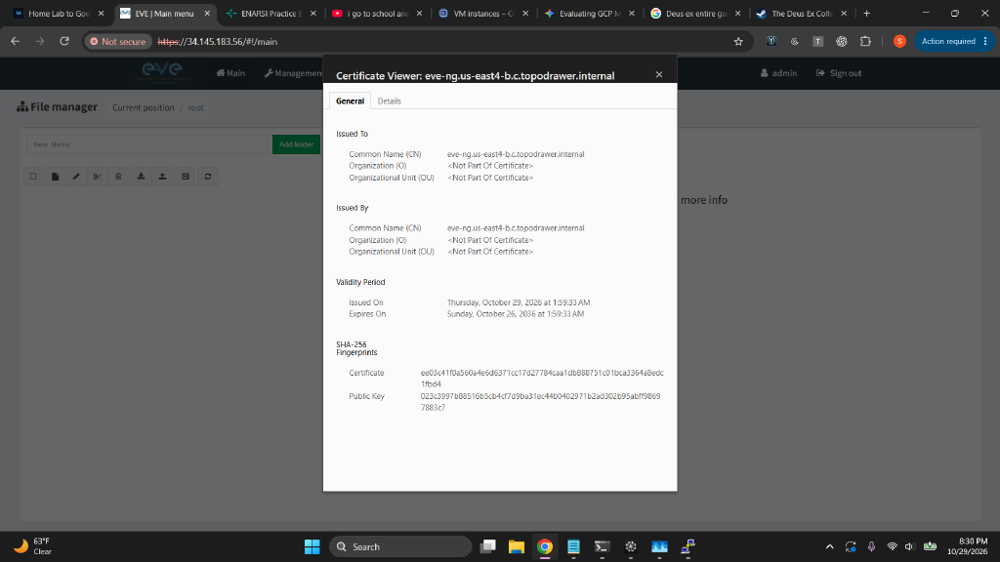
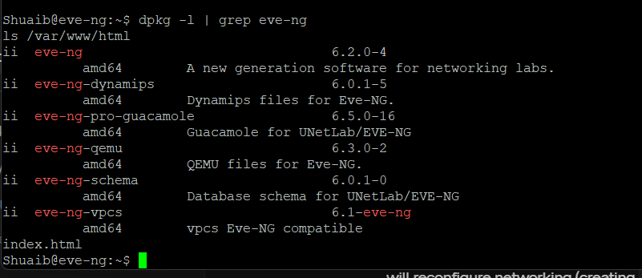
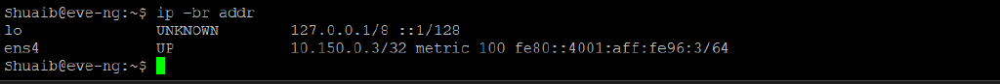
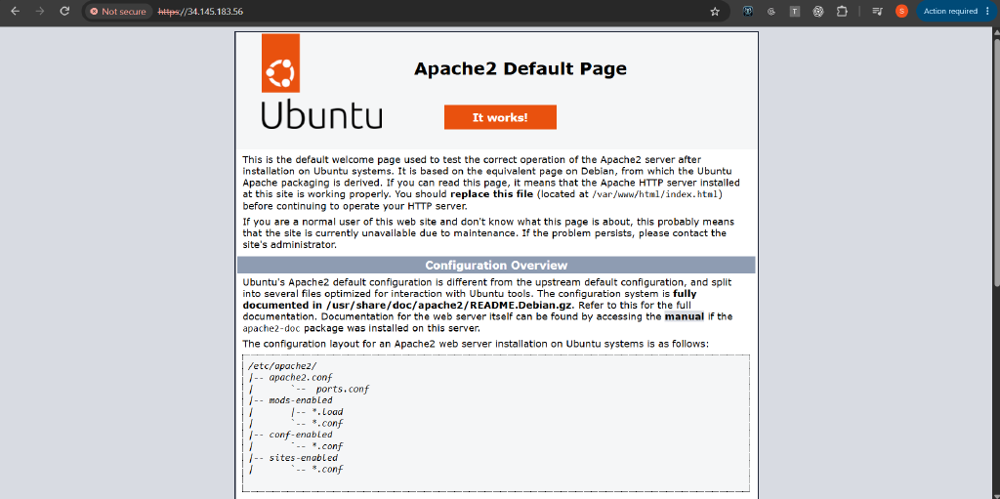
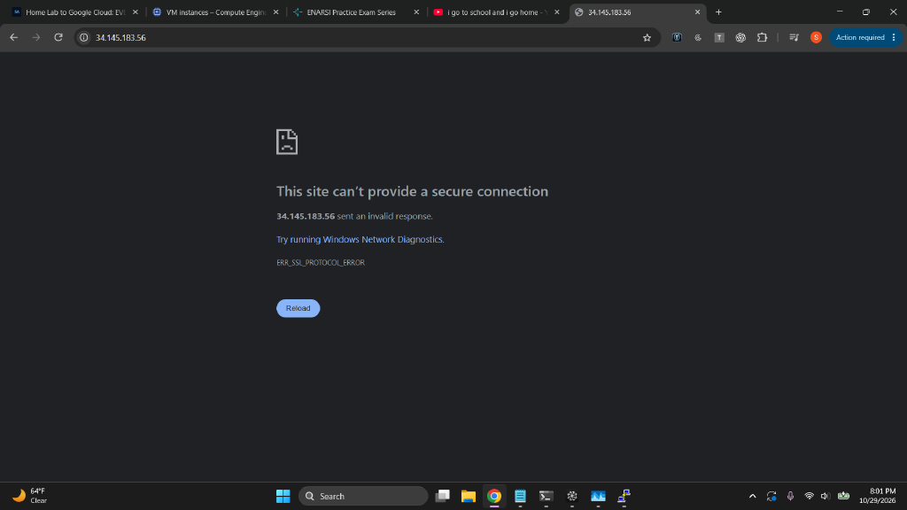
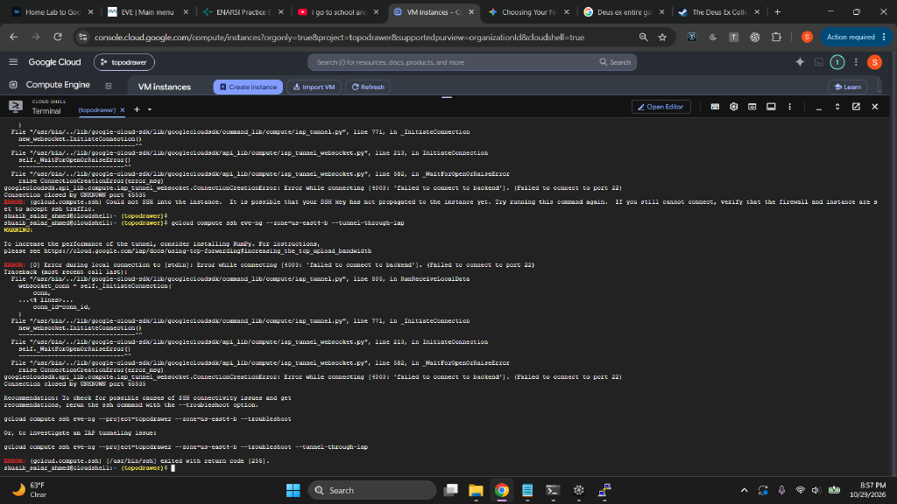
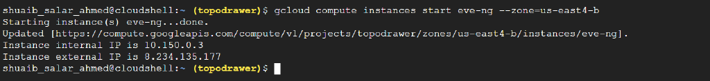
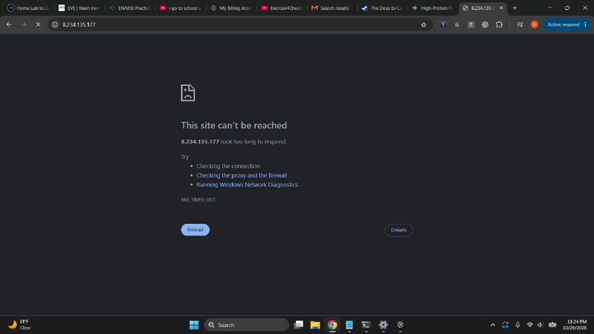
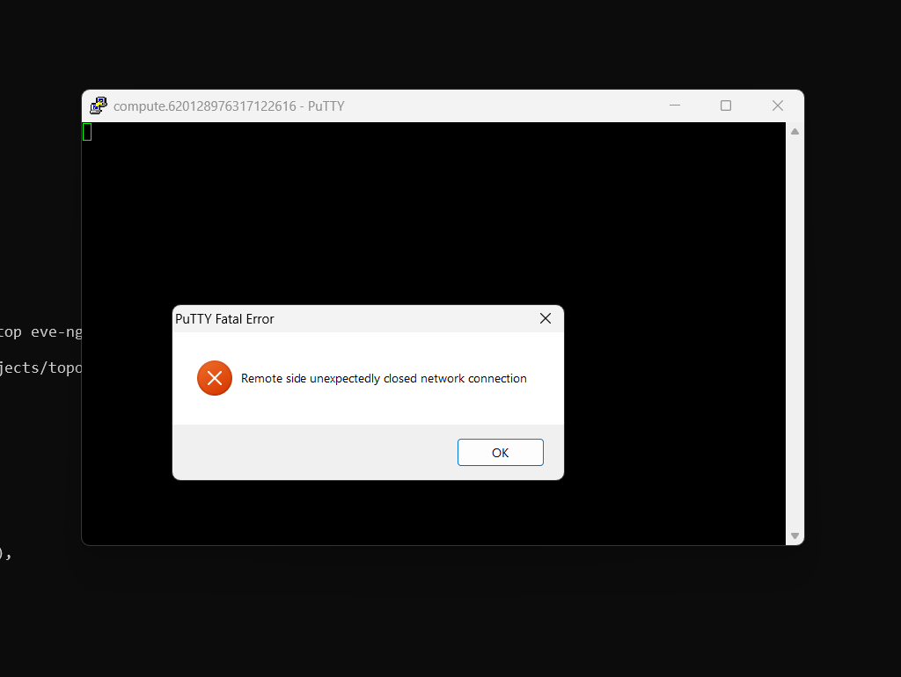

Objective · Status: paused
Break the RAM ceiling: ~70 network devices in the cloud at ~$0.20/hour.
The home EVE-NG server tops out around 10–15 running nodes. This migration rents an 8 vCPU / 64 GB VM in GCP's us-east4, installs EVE-NG Community on Ubuntu 22.04, and locks access to a single IP. EVE-NG installed and worked over HTTP (day 1) and HTTPS (day 2). Then a live network change on day 2 took the VM off the network. A disk-rescue recovery is planned and has not been run yet.

Read this first
This report was rewritten
The first version (October 29, 2:50 AM) was drafted by an AI assistant minutes after the web page first loaded. It claimed HTTPS was live, the pnet0 bridge was verified, an IAP rescue rule existed, and the static IP was attached. None of that was true yet. This version corrects every claim, adds day 2 and the outage, and explains how and why the assistants (and I) got it wrong. The full Markdown report lists each correction and ends with a one-shot runbook for doing the build correctly.

Sizing and billing
A FAILED_PRECONDITION on the project link looked like an IAM problem; it was a dead billing account. Recovery: new payments profile → one-time $30 prepayment → account active. The free trial had been used up by the failed first attempt, so the build ran on $30 of real credit, about 150 hours of 70-node labbing at Spot prices.
| 70 × IOSv | ~35 GB RAM — fits an n2-highmem-8 (8 vCPU / 64 GB) |
|---|---|
| 70 × IOSvL2 | ~55–70 GB — needs a 128 GB n2-highmem-16 |
| Spot model | ~65% cheaper; --instance-termination-action=STOP keeps lab state on eviction |
| Machine family | N2, never E2: EVE-NG needs nested virtualization |

Battle 2
The wrong instance, and a false claim about nested virtualization
The first instance came up from console defaults: 3.6 GiB RAM, Debian, no nested virtualization. free -h caught the size; kvm-ok caught the missing virtualization. The assistant then said nested virtualization "can only be enabled at instance creation." That is wrong: Google supports enabling it on an existing, stopped VM through advancedMachineFeatures. Deleting and recreating the 40-minute-old instance was still cheap, but the reason given for it was false. A second model, asked later, advised checking the setting instead of deleting.

free -h on the first instance: 3.6 GiB on a machine specced for 64 GB.
kvm-ok: no /dev/kvm. Run this before installing EVE-NG, which installs fine without virtualization and then fails at every node boot.
--enable-nested-virtualization: 8 vCPUs, 62 Gi usable RAM, /dev/kvm present.Battle 3
Four shells, four ways to mangle a command
The work crossed cmd.exe, PowerShell, Git Bash, and Cloud Shell. Bash \ continuations ran as garbage in cmd.exe. PowerShell split bare comma lists into separate arguments (--rules=tcp:22,tcp:23 reached gcloud as loose values). Long billing IDs lost characters in copy-paste. During the outage, multi-line rescue scripts broke in Cloud Shell. The fixes: one-liners, quoted lists everywhere, and letting the CLI print IDs instead of retyping them.

--flag line ran as its own command.Battle 4
Firewalls are unions of allows
Rules: eve-ng-lab (22/23/80/443 from my IP), eve-ng-consoles (32768–32999 for the arena bridge), and Google's world-open default-allow-ssh deleted. Two corrections: the IAP rescue rule (allow-iap-ssh) wasn't created until the outage on day 2, and default-allow-rdp was never deleted. The first rule also used the wrong source IP. The assistant blamed an overnight ISP rotation, but 73.217… vs 72.227… is a two-digit typo, four hours apart, and my IP was unchanged the next day.
| Key insight | ALLOW rules stack; they never subtract. A rule for 32768–32999 cannot "block" 443. |
|---|---|
| Real exposure | Port 22 open to 0.0.0.0/0 made the scoped rule pointless until deleted. |
| Rescue path | Only counts once it exists and has been tested. Ours was neither. |

ii (installed). The package install itself was fine.Battle 5
The install that skipped the important part
EVE's cookbook has a Google Cloud procedure: run the official install-eve.sh as root, reboot, then complete the setup wizard with DHCP. On Google Cloud that installer renames the NIC to eth0, rewrites netplan, removes cloud-init, swaps the kernel, and the wizard builds the pnet0 bridge. The assistant never found that guide. It pulled the repo URL from EVE's update script and installed the package by hand, which skipped all of the Google Cloud tuning and the wizard. The first report then described a pnet0 fix as done and verified. It had never been run.

ens4 holds the internal address directly, and there is no pnet0 bridge.Battle 6
Day 1 web: two real finds, one wrong fix
Correct: port 80 was missing from the firewall rule, and the source IP was wrong. Wrong: to enable HTTPS, the assistant had me enable default-ssl, calling it EVE's pre-configured site. It's Ubuntu's stock site, so HTTPS served the Apache "It works!" page. Day 1 ended with EVE working over HTTP, not HTTPS as the first report said.

/var/www/html, not EVE.
Day 2
The HTTPS chase
The UI timed out again. Four theories in a row, all disproven: the home IP rotated (same IP), ufw (inactive), firewall tags (fine), and "EVE never finished installing" (all packages installed; the assistant admitted it). The original timeouts were never explained; the ephemeral IP had changed on restart, which is the likely cause. Next, enabling EVE's site with the claim that it had "its own SSL vhost" produced ERR_SSL_PROTOCOL_ERROR: Apache listened on 443 but nothing there spoke TLS. Adding a real <VirtualHost *:443> with the snakeoil certificate and EVE's proxy rules finally worked.

The outage · 8:43 PM
A live network change over the only way in
To fix the missing bridge, the assistant asked to see the interface files first and, in the same message, gave paste-ready commands: point the bridge at ens4, disable cloud-init networking, and run sudo ifup pnet0, warning to "expect SSH hesitation, a handover, not a failure." I ran it. Making ens4 a bridge port strips its IP, so the SSH session died, and the VM never came back, not even after a reboot. The promised IAP rescue rule didn't exist. The likely boot-time cause: Ubuntu's netplan and EVE's ifupdown now both claim the same NIC, a conflict the official installer removes. It isn't confirmed yet because nobody can log in to look.

Rescue attempts that needed the broken network
- IAP SSH: forwards to port 22 on the VM's internal IP. No guest network, nothing to connect to.
- Three startup scripts via metadata: the assistant said metadata works "even when network config is wrecked." It doesn't; the guest agent downloads scripts over the guest network. None ran.
- Serial console: reaches the VM without a network, but login needs a local password, which the startup script was supposed to set.
- Static IP: finally attached (8.234.135.177). Useful later, unrelated to the outage.
- "Delete and rebuild": recommended at the end. I nearly did it, which would have destroyed a working install. I switched models instead.



Post-mortem
How the AI assistants failed, and why
Several models took turns in one session: GLM 5.3 Flash did most of the build and all of the outage, GPT 6.1 handled the static-IP script and flagged the open SSH rule, Gemini answered one question correctly, and Claude Opus did this analysis and the recovery plan.
| Facts from memory | Confident rules that were never checked: "creation only," "pre-configured," "own SSL vhost," "rotated overnight," "metadata works without network." |
|---|---|
| Wrong source | Never found the vendor's Google Cloud guide; a hand-built install skipped the parts that keep networking safe. |
| Report before evidence | Wrote the first report from the plan, not from checked output. |
| Guessing, not isolating | Day 2 fixes were applied before the cause was known. |
| Risky sequencing | A live network change over the only SSH path, with an untested rescue path. |
| Circular recovery | Every rescue tried depended on the network that had just broken; then "delete it." |
What they got right: the wrong machine type, kvm-ok before install, the missing port 80, reading scripts before running them, the 443 vhost that worked, flagging the open SSH default, and admitting errors when shown evidence. Opus also overstated one cause of the outage and corrected it; its recovery plan is still unproven.

My part
The rush
It was my rush to get the migration done that kept me from seeing what was wrong. I pasted commands as fast as they came, including a live network change on the only connection into the VM, without asking what would happen if it failed or whether the rescue path had been tested. The home IP I supplied had two digits wrong. And I published a report without checking it against my own screenshots, which would have caught most of the false claims in minutes.
- Vendor docs first, for the exact platform.
- Never change the network I'm connected through. Snapshot, set a password, and test the serial console first.
- One command, one expected output, stop at the first mismatch.
- Every "it works" points to evidence. Plans are labeled as plans.
Next
Recovery plan: disk rescue (not yet run)
- Stop the VM and snapshot its disk, so the rescue can't make things worse.
- Attach the disk to a small temporary Debian VM, reachable through IAP.
- Read the network files before changing anything; back them up; reduce EVE's interfaces file to loopback so netplan brings up
ens4alone. Stop if netplan has no config. - Set a local password so the serial console works next time.
- Move the disk back, remove the leftover startup script, start, and verify SSH and
https://8.234.135.177. - Then build
pnet0the official way, with a tested rescue path, and resume the TopoDrawer migration.
Verification gates
| Billing, VM specs, nested virt | Passed |
|---|---|
| EVE packages installed | Passed (day 2) |
| Web over HTTP / HTTPS | Passed day 1 / day 2 |
pnet0 bridge | Never passed |
| Rescue path tested | Never tested before it was needed |
| Network after reboot | Failing (outage) |